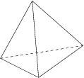
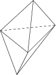
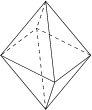

Simplicial complexes
All simplicial n-complexes, whose (n-2)-dimensional faces are contained in 3 or 4 simplices have been classified in terms of partitions of {1,..., n+1}. See below the 2-dimensional case:



L M. Deza, M. Dutour Sikirić, M. Shtogrin, On simplicial and cubical complexes with short links, Israel J. Math. 144 (2004), 109--124.